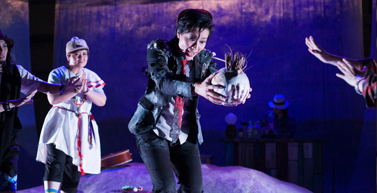
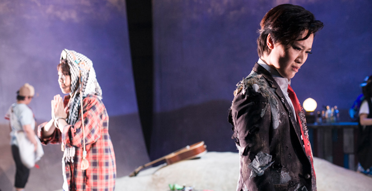
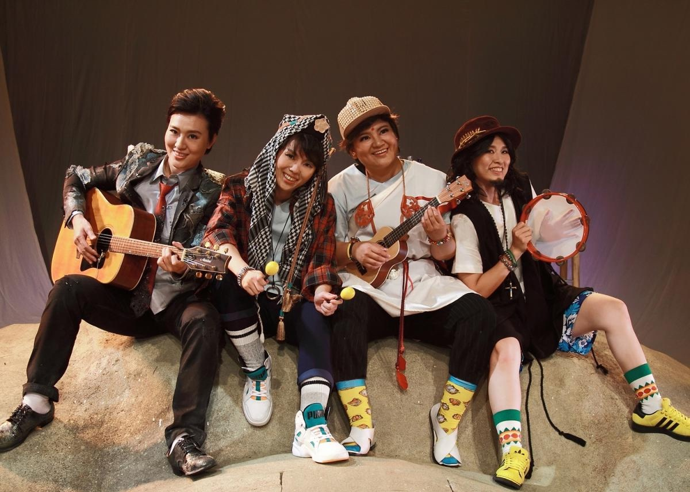

WORK · 2014 / 2018
《我可能不會度化你》
編劇・導演・主演
傳統戲曲 Remix：神佛、荒島與一場可能的妄想
豫劇、歌仔戲融入搖滾、嘻哈與 Bossa Nova，甚至讓《金剛經》與流行節奏同場。作品把東方與西方、神佛與凡人、真實與虛幻不斷 Remix，打造「一切有為法，如夢幻泡影」的黑盒子劇場。
奇巧以宗教題材反向操作說教劇：佛陀、阿難、耶穌穿著度假裝在荒島烤肉、自拍；一名受盡苦難的「苦哈哈」漂流上岸，直接質問神佛為何不來度化世人。
SYNOPSIS
荒島、前世今生與精神病院
佛陀與弟子阿難到荒島度假，意外遇見耶穌；三位神聖人物的悠閒，與苦哈哈一生的困頓形成強烈反差。苦哈哈質問神佛，佛陀於是試圖從前世今生解釋因果。
然而敘事忽然翻面：荒島可能只是精神病院裡的一場角色扮演與妄想。神佛是否存在、誰在度化誰、眼前究竟是真實還是投射，都不再有唯一答案。
「可能」不是含糊，而是作品故意留下的空間：可能被度化，也可能只是重新看見自己的執念。
CREATION
混融不是裝飾，而是敘事節奏
不同唱腔與音樂曲風依劇情推進而轉換，音樂本身成為結構的一部分。近距離黑盒子讓傳統戲曲的身體、唱腔與當代觀眾處在更直接的互動關係中。
CRITICAL RESPONSE
評論節錄
《我》正是臺灣當今文化的表徵，像每一位臺灣人講話一樣，國語、台語、英文單詞渾然一體。海派文化的關鍵字——海納百川、新舊雜揉，而這也正是臺灣文化的活力。因此，“奇巧劇團”是有生命力的，值得期待。
上海復旦大學 李楠教授評《我可能不會度化你》不論是高亢的豫劇、相對低沈的歌仔戲、還是流行歌曲民歌搖滾，不同曲風不同唱腔所最終回歸的，乃是純粹的音色之美與音色之異，這個既在唱腔之內、亦在唱腔之外、既在表情達意之內、亦在表情達意之外的「音色」，讓《我》劇成就一齣難得的「音色解構共同體」，奇妙且美妙地既共生（聲）又互異。
臺灣大學外文系 張小虹教授 台新藝術獎提名觀察文STAGE PHOTOS
演出劇照


